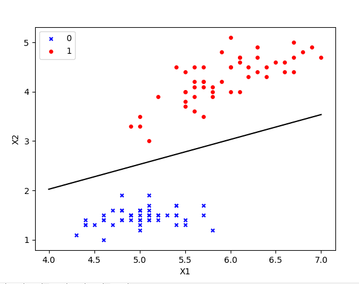
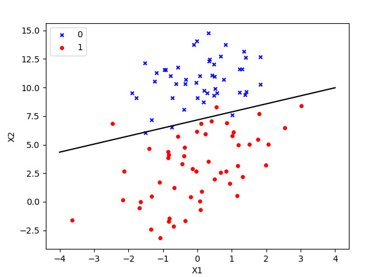
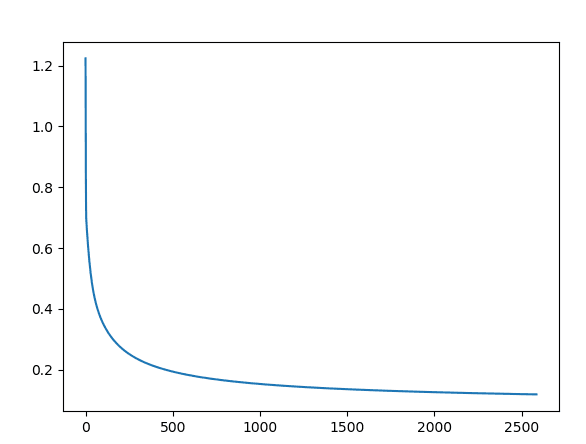
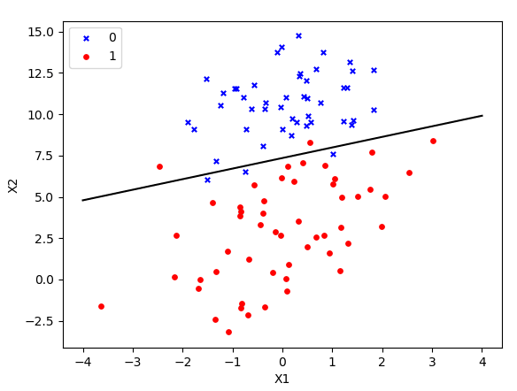
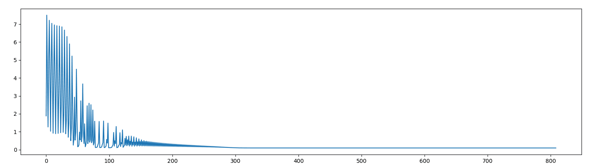
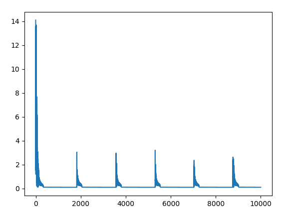

首先总结一下学习，虽然叫回归但是和回归没有任何关系，刚尝试写代码时，思考分类问题陷入了线性回归的思路，纠结了好久，已经求出weights但不会拟合直线，后来用笔画了下立刻明白思考偏离了，所以就算有了电脑还是应该用笔在纸上画一画。
写代码首先第一步是要知道做什么：我需要画一个直线，直线公式为 θ0 x0 + θ1 x1 + θ2 * x2 = 0 其中x0 = 1。想要画出这条直线我需要知道三个θ的值，通过吴大大的机器学习视频我知道的把θ的转置乘以x的带入逻辑函数g(z)就能求出预测函数h(x),然后通过梯度下降的方式更新θ，最终得到θ的近似值。1
2
3
4
5
6
7
8
9
10
11
12
13
14
15
16
17
18
19
20
21
22
23
24
25
26
27
28
29
30
31
32
33
34
35
36
37
38
39
40
41
42
43
44
45
46
47
48
49
50
51
52
53
54
55
56
57
58
59
60
61
62
63
64
65
66
67
68
69
70
71
72
73
74
75
76
77
78#!/usr/bin/python
# coding=utf-8
from sklearn.datasets import load_iris
import matplotlib.pyplot as plt
import numpy as np
# 逻辑函数(Logistic function)
def gfunc(z):
return 1 / (1 + np.exp(-z))
# 构造训练集：引入了鸢尾花数据集来作为训练集
iris = load_iris()
data = iris.data
target = iris.target
# 取前一百行的第一列和第三列做特征值
X = data[0:100, [0, 2]]
y = target[0:100]
# 画出训练集的散点图
label = np.array(y)
index_0 = np.where(label == 0)
plt.scatter(X[index_0, 0], X[index_0, 1], marker='x', color='b', label='0', s=15)
index_1 = np.where(label == 1)
plt.scatter(X[index_1, 0], X[index_1, 1], marker='o', color='r', label='1', s=15)
plt.xlabel('X1')
plt.ylabel('X2')
plt.legend(loc='upper left')
########################################################
# 训练集构建完成后判断边界，我猜边界是一条直线
# 直线的公式：θ0 * x0 + θ1 * x1 + θ2 * x2 = 0 其中x0 = 1
# 因为这个问题里是一个二维分类，所以边界是有三个θ决定的
########################################################
# 训练集的个数m
m = 100
# 重新构建了X向量 加上了x0=1
x0 = np.full(m, 1.0)
x0 = np.vstack(x0)
x = np.column_stack((x0, X))
# 随机设置三个theta值
theta = np.random.randn(3)
# 两种终止条件
loop_max = 10000 # 最大迭代次数(防止死循环)
epsilon = 1e-3
error = np.zeros(3)
count = 0
alpha = 0.001 # 步长
while count < loop_max:
delta = np.zeros(3)
for i in range(m):
delta = delta + (gfunc(np.dot(theta, x[i])) - y[i]) * x[i]
theta = theta - alpha * delta
# 判断是否已收敛
if np.linalg.norm(theta - error) < epsilon:
finish = 1
break
else:
error = theta
count += 1
print("The number of iterations = ", count)
print(theta)
# x0 = 1
# 已经求得theta参数，给出x1的值，根据theta计算x2，画出直线
x1 = np.arange(4, 7.5, 0.5)
x2 = (- theta[0] - theta[1] * x1) / theta[2]
plt.plot(x1, x2, color='black')
plt.show()

后来我通过学习他人的逻辑回归函数，修改步长，观察损失图，发现了些有趣的事，我把代码重构了，更便于可视化
首先我把步长设置为0.001，然后画出loss图：


0.001的步数大概迭代2500多次达到低谷，从图中中观察到loss损失相当平滑，没有出现震荡
然后我修改了步数为0.01，只通过800次迭代就下降到低谷，但是出现震荡，如果在线性回归中出现震荡则不会收敛，但是在逻辑回归问题中，尽管出现了震荡，但最终还是收敛。


但如果我把步数设置的更大0.02时，就会每1800次后出现震荡的情况，最终无法收敛。
